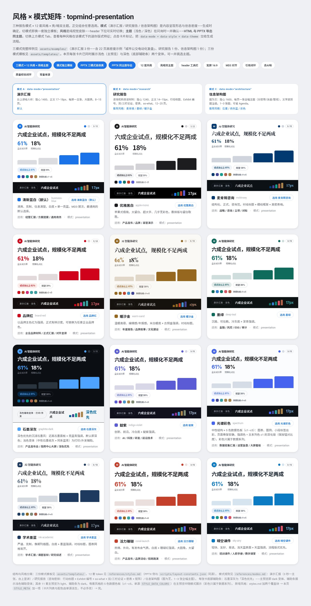

← 返回首页

Topmind Presentation · v0.2.7
一份内容，翻页的 HTML 和可编辑的 PPTX。
技能名 topmind-presentation，品牌名 TopPPT HTML。HTML 和 PPTX 出自同一份内容模型：日常翻页的是 HTML，要改版式时导出可编辑 PPTX。
三种成稿
先定模式，再写页。
下面三张是仓库自带的示例报告首页。
A · 演示台上讲的演示，每屏一个主张。 
B · 研究研究报告，图表带来源和结论条。 
C · 架构架构说明，以拓扑、泳道和分层图为主。
九套风格
同一份文件里切换风格。
亮色适合外发，深色适合大屏。下面是三种模式和九套风格的矩阵。

HTML 顶栏工具栏
打开就能用的快捷键。
交付的 HTML 顶部自带工具栏，下面是各按钮和对应按键。
T亮暗主题
浅色适合外发，深色适合大屏，按文件记忆。
☰风格选择
九套风格实时切换，只改视觉，不动内容。
P预览 PPTX
按页序列预览，可复制提示词回对话来导出。
HPPT 生成指引
说明导出 PPTX 的两条通道与环境依赖。
F全屏
沉浸式演示，方向键翻页。
B收起工具栏
折叠成迷你条，位置按文件记忆。